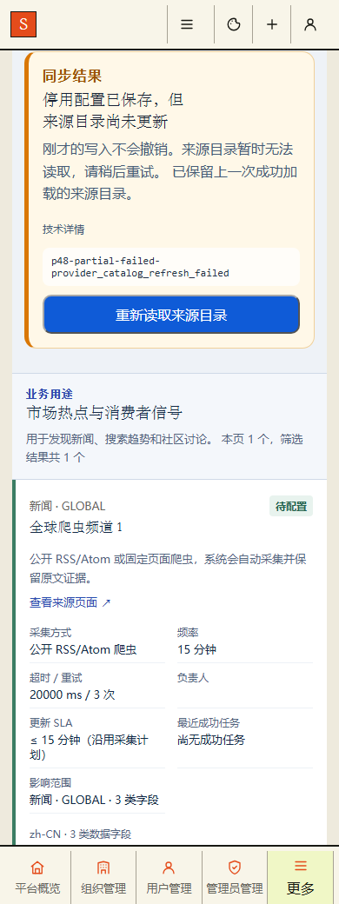
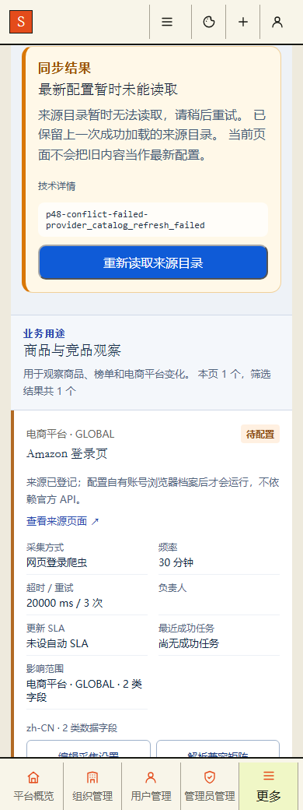

P48 编辑采集设置 · 终态返回与目录重读 r1
390px · saved-refreshing · refreshing
390px · saved-success · success
390px · saved-failed · failed
390px · saved-failed · failed · 技术详情
 390px · saved-retry · refreshing
390px · partial-success · success
390px · partial-failed · failed
390px · saved-retry · refreshing
390px · partial-success · success
390px · partial-failed · failed

390px · partial-failed · failed · 技术详情
390px · conflict-success · success
390px · conflict-failed · failed

390px · conflict-failed · failed · 技术详情
760px · saved-refreshing · refreshing
760px · saved-success · success
760px · saved-failed · failed
 760px · saved-retry · refreshing
760px · partial-success · success
760px · partial-failed · failed
760px · conflict-success · success
760px · conflict-failed · failed
760px · saved-retry · refreshing
760px · partial-success · success
760px · partial-failed · failed
760px · conflict-success · success
760px · conflict-failed · failed
 1024px · saved-refreshing · refreshing
1024px · saved-success · success
1024px · saved-failed · failed
1024px · saved-retry · refreshing
1024px · partial-success · success
1024px · partial-failed · failed
1024px · conflict-success · success
1024px · conflict-failed · failed
1440px · saved-refreshing · refreshing
1440px · saved-success · success
1440px · saved-failed · failed
1024px · saved-refreshing · refreshing
1024px · saved-success · success
1024px · saved-failed · failed
1024px · saved-retry · refreshing
1024px · partial-success · success
1024px · partial-failed · failed
1024px · conflict-success · success
1024px · conflict-failed · failed
1440px · saved-refreshing · refreshing
1440px · saved-success · success
1440px · saved-failed · failed
 1440px · saved-retry · refreshing
1440px · partial-success · success
1440px · partial-failed · failed
1440px · conflict-success · success
1440px · conflict-failed · failed
1440px · saved-retry · refreshing
1440px · partial-success · success
1440px · partial-failed · failed
1440px · conflict-success · success
1440px · conflict-failed · failed